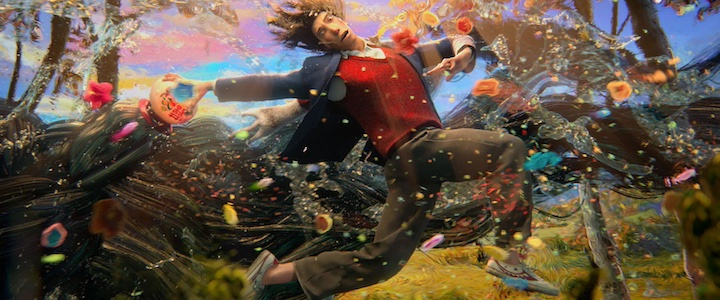
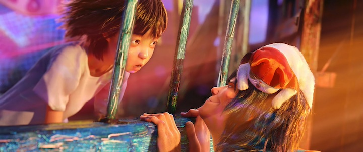
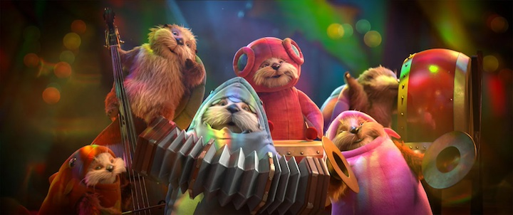
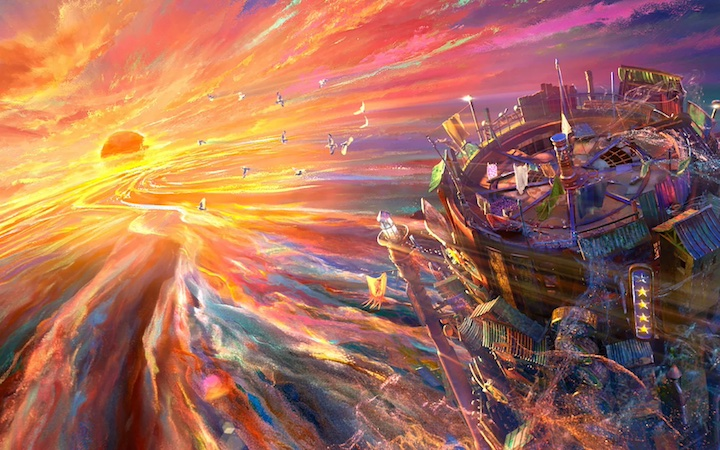

Amis imaginaires, guide à plumes, monstres et rêve plus doux que la réalité
Tout autre registre ici, on part pour un voyage dans l’imaginaire, les légendes, les monstres et les rêves.
Blue et Compagnie, 2024
Résumé
Alors qu’elle revient vivre chez sa grand-mère après la mort de sa mère, pendant que son père est hospitalisé, Bea est tout à coup capable de voir les amis imaginaires de tout le monde. Ils habitent sur la palier du dessus. Elle se donne alors pour mission de réconcilier ces créatures avec leurs créateurs respectifs, même devenus adultes, pour rendre tout le monde heureux.
Mon avis
Le film est beau, il y a de jolis effets et les créatures sont amusantes. Le sujet est quand-même un peu spécial et quelques aspects m’ont sans doute échappé. Les émotions sont au rendez-vous : tendresse, amusement, joie, peine, etc. Le passage où Bea comprend qui est son ami imaginaire et leurs retrouvailles est très touchant.
Le garçon et le héron, 2023
Résumé
Mahito vient vivre à la campagne après la mort de sa mère. Ayant du mal à faire son deuil, le jeune garçon part à l’aventure dans le domaine, suivant un héron cendré qui le conduit dans les méandres de l’imaginaire.
Mon avis
Aussi étonnant que cela puisse paraître pour un film d’Hayao Miyasaki, je n’ai pas pu terminer ce film. D’abord, le héron est très flippant et n’a rien de poétique ou d’initiatique, comme cela le laissait supposer. Ensuite, je n’ai rien compris… Quelque chose m’échappe complètement et le film m’a semblé long et ennuyeux. Je suis désolée de ressentir cela pour ce qui est censé être un chef d’œuvre. Si ça se trouve, la fin est démente et éclaire tout le reste de l’aventure, mais les personnages n’ont pas su m’accrocher, il manque l’ambiance musicale caractéristique des films du Studio Ghibli qui nous prend habituellement aux tripes et nous plonge dans un univers profond et puissant. Il manque trop d’ingrédients cruciaux ici.
Monster High 2, 2024
Résumé
Clawdeen, Draculaura, Frankie et tous leurs amis entrent en deuxième année à Monster High, qui est devenue une école bien plus ouverte et permissive. La petite vampire peut ainsi pratiquer librement la magie, même si certains élèves craignent cette pratique associée aux sorcières. Draculaura veut leur montrer qu’ils n’ont pas à avoir peur, elle s’allie donc à de véritables sorcières pour essayer d’amener la paix entre elles et les monstres.
Mon avis
Le style des monstres, leurs chaussures, leurs chansons et les relations entre les personnages sont toujours aussi cools. L’histoire est, quant à elle, plutôt bancale et le pot aux roses est perceptible assez vite. Je me suis quand-même amusée et 🎵 « mon cœur fait boum-boum » 🎵 en regardant cette comédie musicale très sympa et haute en couleurs. La fin annonce une suite plutôt intrigante. J’espère juste que Deuce sera toujours là !
💖 Le Royaume des Abysses, 2024
Résumé
Shensha (orthographe à ma sauce), 10 ans, part en croisière avec son père et sa belle-mère. Délaissée, elle est malheureuse et voudrait revoir sa mère. Elle tombe par-dessus bord pendant une tempête et se retrouve aux abords d’un étrange restaurant dont les clients sont… des poissons qui marchent sur deux pattes et parlent ! Le Capitaine et Chef Nore (orthographe perso aussi…) propose une soupe de boulettes des plus étonnantes.
Mon avis
Alors là, c’est du très très lourd ! Tout, absolument tout, dans ce film d’animation est extraordinaire : les personnages, l’histoire, l’ambiance, le style graphique, les rebondissements, le collage des pièces de puzzle à la fin… C’est tout simplement magnifique.
Le début du film est un peu terne, grisonnant, on sent l’angoisse et la solitude qui étreignent la jeune fille. L’immersion dans le monde coloré et étourdissant de Nore offre comme un rafraîchissement bienvenu à l’héroïne et aux spectateurs. Pourtant, la menace plane et la détresse de l’enfant est toujours présente, avec le fantôme rouge. Le double jeu du Capitaine, ses mensonges et le fait qu’il se serve de Shensha est malaisant. On sent que les mauvaises personnes peuvent être présentes ici aussi, comme à la surface. C’est pourquoi quand Nore revient sur ses pas et apporte son secours, de manière très héroïque et complètement démentielle, à Shensha, une sorte de nouveau souffle habite les personnages et l’ambiance toute entière du film.
Le dénouement final est très choquant (film à revoir absolument, donc rien ne doit être révélé ici !), émotionnellement parlant, c’est une surprise et une claque douloureuse. Un mélange incontrôlable d’émotions nous assaille et nous malmène jusqu’aux dernières images du générique de fin qui suggèrent que Shensha ne se remettra jamais vraiment de ce voyage.
La beauté graphique de ce film est saisissante. Chaque image, chaque couleur, chaque mouvement biscornu et malléable a un sens et porte le film. Les musiques sont aussi parfaites, puissantes. 💕 Un pur chef d’œuvre 💖.
De bons moments et une découverte incroyable. Merci le cinéma ♡.